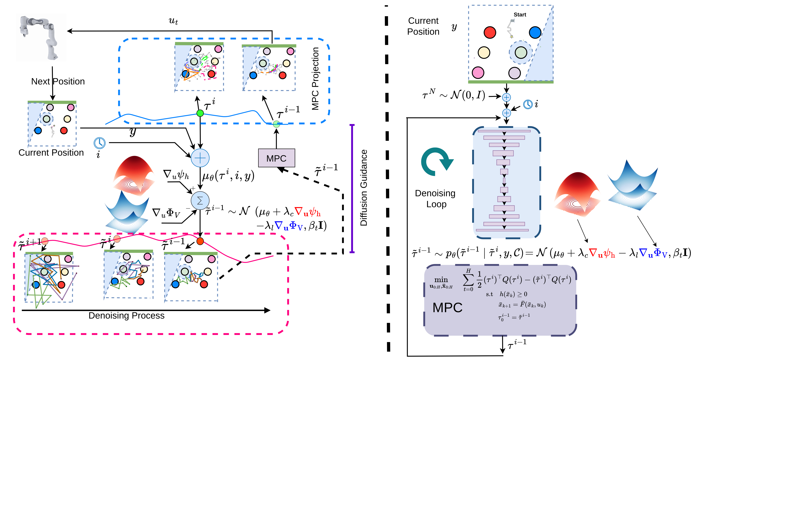
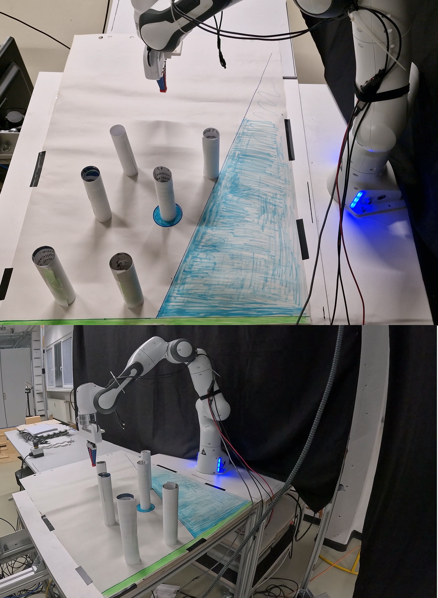
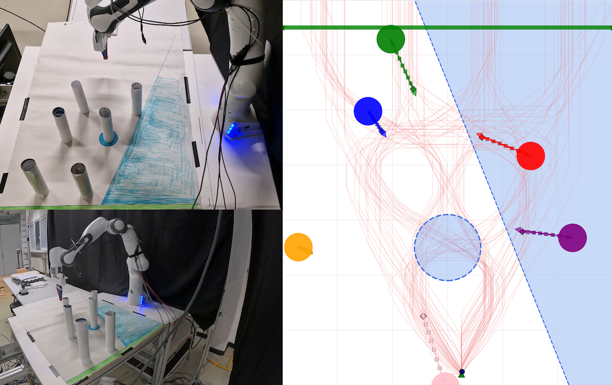
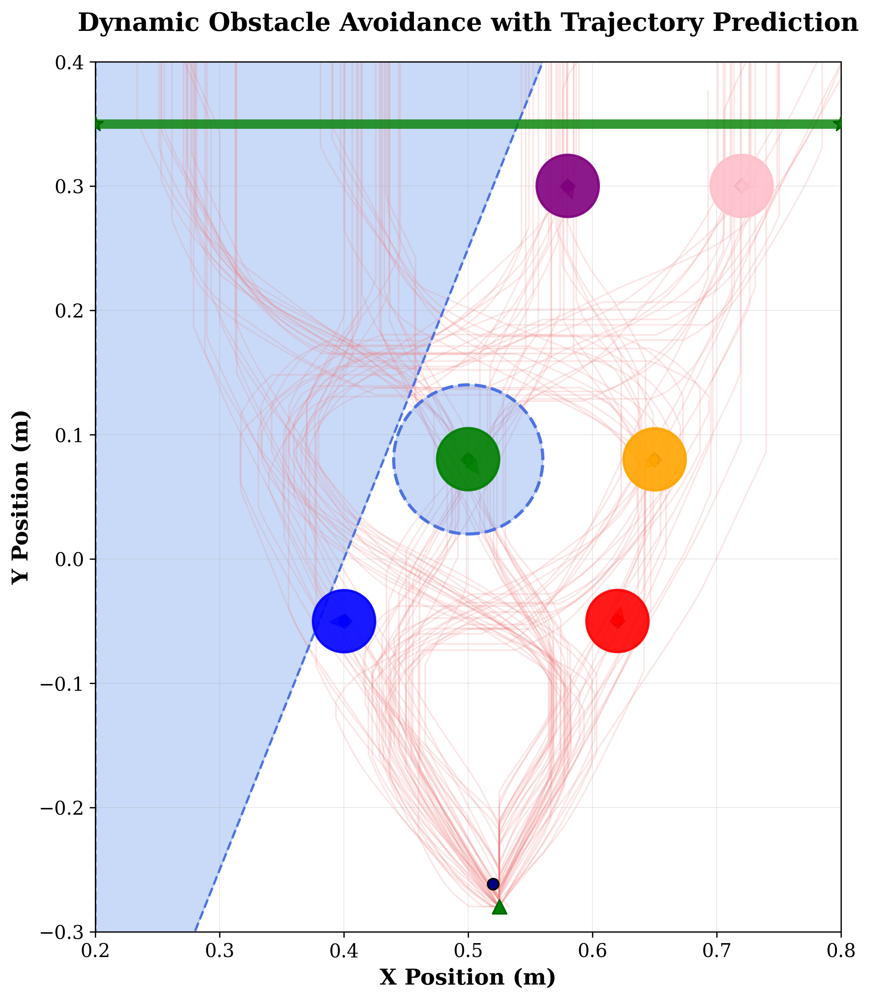
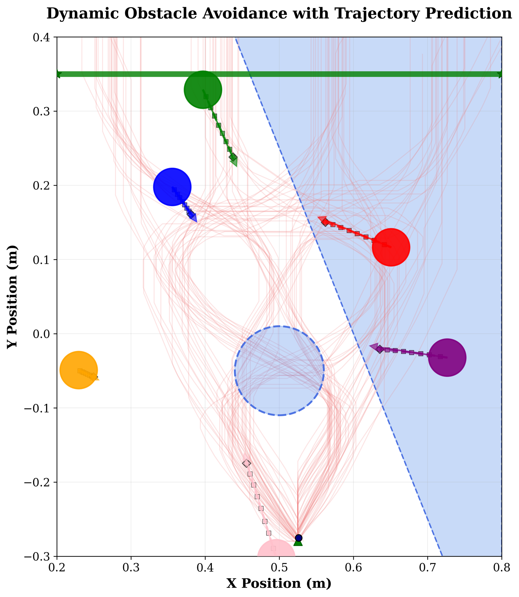

A key limitation on the use of diffusion models in robotic trajectory planning is their inability to inherently enforce hard safety or dynamical constraints, which often results in physically infeasible or unsafe outputs. Hybrid approaches that employ model predictive control (MPC) to address this problem can be unstable, as poor trajectory initializations from the diffusion model prevent the MPC from converging to a safe and feasible solution.
To overcome these challenges, we propose D-SafeMPC, which fundamentally enhances the interaction between diffusion models and optimal control. Our method guides the reverse diffusion process with control barrier functions (CBFs) and control Lyapunov functions (CLFs), and employs an iterative-projection scheme where an MPC refines the trajectory at each denoising step. This steers sampling toward safe, goal-directed regions and provides reliable MPC warm starts.
In extensive simulations on a 7-DOF Franka manipulator across four scenarios (one static-obstacle and three dynamic-obstacle settings) and in a sim-to-real experiment on a physical Franka robot, D-SafeMPC improves safety, task success rates, and planning efficiency over state-of-the-art baselines.
Guides the stochastic reverse diffusion process with discrete-time CBF and CLF gradients, ensuring high-quality warm-starts without retraining the diffusion backbone.
Enforces strict hard safety and kinematic/dynamic feasibility constraints by projecting trajectories onto admissible control sets at each denoising step.
Validated on a physical 7-DOF Franka Emika Panda robot with real-time avoidance of moving obstacles, demonstrating zero collisions and fast execution.
We deployed D-SafeMPC zero-shot on a physical 7-DOF Franka Emika Panda manipulator. The robot successfully executes reaching tasks while evading dynamic obstacle intrusions:

7-DOF Franka Emika robot reaching across workspace under hard safety constraints.

Rapid trajectory re-planning when an unexpected dynamic obstacle crosses the path.
We benchmarked D-SafeMPC against Diffuser, CoBL-Diffusion, and DPCC across four demanding scenarios in MuJoCo:

Constrained corridors with immovable barriers.

Oscillating and moving obstacles with time-varying barrier functions.
Full PyTorch implementation, MPC projection formulation, Franka robot controllers, and experiment configs:
View Repository (github.com/erdiphd/D-SafeMPC)If you find D-SafeMPC or this framework useful for your research, please cite:
@inproceedings{sayar2026dsafempc,
title = {D-SafeMPC: Diffusion-Driven Safe Model Predictive Control with Discrete-Time Control Barrier Functions},
author = {Sayar, Erdi and Da{\c{s}}, Ersin and Burdick, Joel W. and Knoll, Alois and Kayacan, Erdal},
booktitle = {IEEE/RSJ International Conference on Intelligent Robots and Systems (IROS)},
year = {2026},
address = {Pittsburgh, PA, USA},
publisher = {IEEE}
}